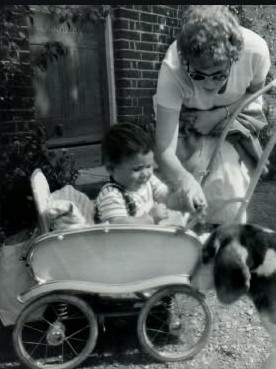

The Reality of Early Parenthood
Early parenthood brings responsibilities that can be difficult to manage at a young age.

Early parenthood brings responsibilities that can be difficult to manage at a young age.
Raising a child requires continuous financial support. Parents must prepare for daily needs and expenses.
Becoming a parent early may affect a person's education journey. Some young parents need extra support to continue their studies.
Parenthood involves emotional responsibilities. Young parents may experience stress and need understanding and support.
Education helps young people understand reproductive health and responsible decision-making.